Designed and built electrochemical systems for the synthesis and characterisation of conducting polymer—hydrogel composites, including custom electrodes, reference systems, and measurement apparatus.
Electrochemical measurement systems were refined to improve accuracy and reduce artefacts associated with solution resistance and electrode geometry.
Initial configurations used conventional reference and salt bridge arrangements. These were modified to reduce the distance between reference and working electrodes, minimising potential error and improving measurement stability.
A revised cell design incorporated a gold working electrode embedded in PTFE within a confined geometry, with counter and reference elements positioned in close proximity. This provided a controlled electrochemical environment and improved signal consistency.
Alternative electrode materials, including RVC and tantalum, were evaluated to assess stability and electrochemical response under varying conditions.
Electrode area estimation was performed using chronocoulometry with ferricyanide, applying standard electrochemical relationships to relate charge transfer to effective surface area.
Quartz crystal microbalance measurements were used to investigate mass and viscoelastic changes in polymer systems.
Limitations in output dynamic range were identified, constraining signal resolution and sensitivity. These observations informed interpretation of results and subsequent measurement approaches.
Hydration and dehydration behaviour was examined through controlled introduction of phosphorus pentoxide within the measurement environment.
This enabled observation of mass changes associated with hydration state under controlled conditions.
A large-format mould was designed and constructed using glass plates and aluminium spacers to enable batch production of polymer gels. This reduced handling of monomeric reagents and improved consistency of sample geometry.
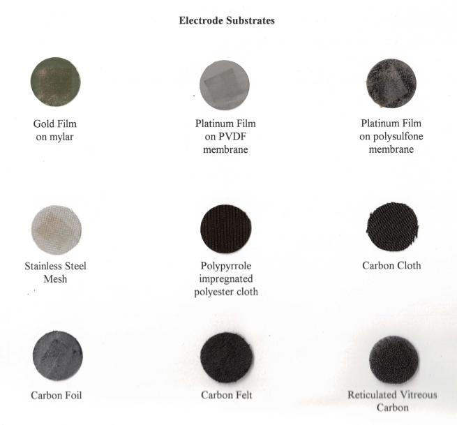
A selection of materials that were used as counter-electrodes, or working electrode substrates.
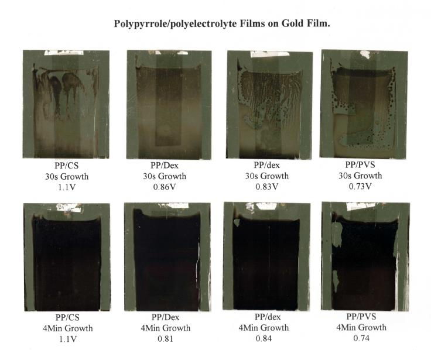
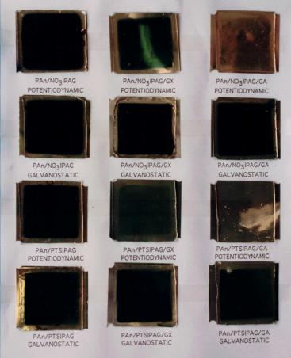
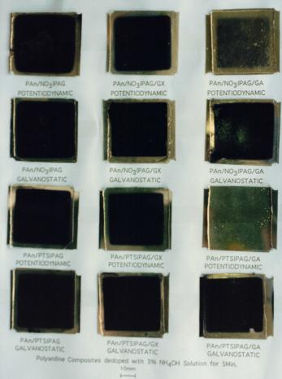
Polypyrrole polymer grown on gold film on mylar substrate with different dopants. Examples of Polyaniline and Polypyrole—Polyacrylamide composites on gold film, under systematically varying growth conditions.
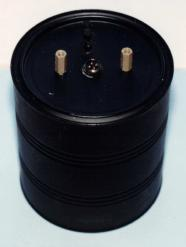
Much of the work requred special conditions—Inert atmosphere, exclusion of electrical noise, or containment of toxic fumes. A suitable cotainment system was fashioned from a large milo can. It was painted with an acrylic spray paint to protect the metal from corrosive materials (liquid or gaseous). All of the connections—Electrical, Fluid (connections to reservoirs or peristaltic pump) and Nitrogen purge and return lines were brought through the lid and sealed with a silicon adhesive.
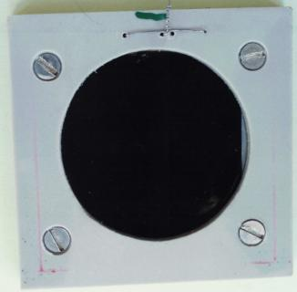
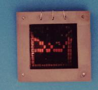
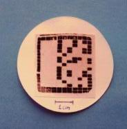
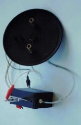
This series includes two clamp assembles that held mylar supported gold film electrodes in intimate association with polyacryalmide gel (1.0mm thickness). In a direct analogy to the use of `resist' for preparation of printed circuit boards the gold film was masked in order to control the deposition of polymer. The next images exhibit successfully controlled deposition of Conducting Polymer into the hydrogel matrix. The final image portrays the electrochemical cell that was used for much of the thin film based work. The lid is from the containment vessel and is still attached to the cell.
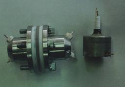
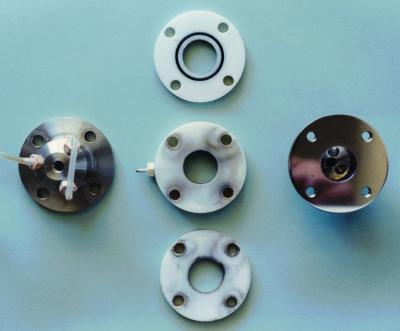
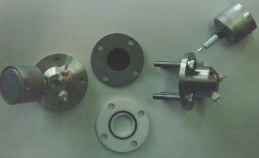
Another area of interest was membrane-based (selective) transport or purification. This cell was engineered to provide flexibility as well as consistency and featured ports for the connection of peristaltic pumps, various reference electrodes, or stirrers. Materials could be characterised under static, flow or hydrodynamic conditions. The stainless casing served as both (reasonably) inert containment, and counter-electrode.
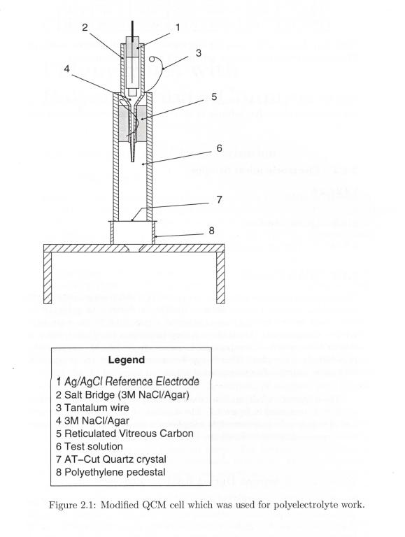
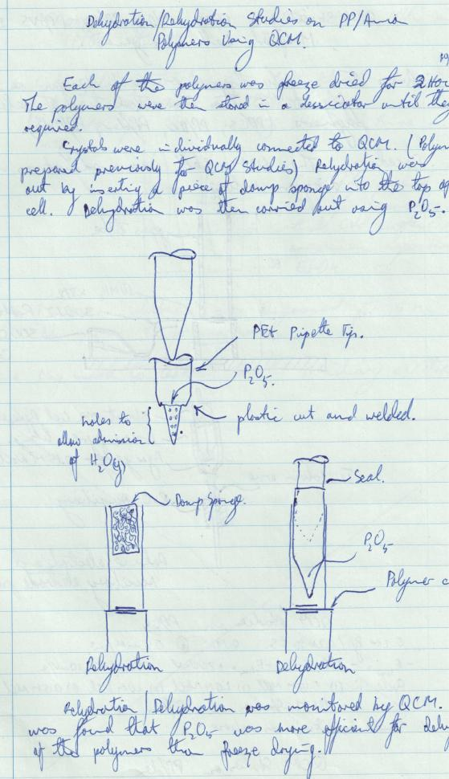
Quartz Crystal Nanogravimitry was used to measure changes in mass (it is understood that QCM is also susceptible to changes in the viscoelastic variations) of a polymer deposited on an AT-cut Quartz Crystal. The conventional cells that were used featered a side-flange onto which crystals would be glued prior to use. Scarcity of cells and long curing times for silastic adhesive prompted a search for a more expedient solution. This cell arrangement was adopted after testing. The small investment in time to filter solution through 0.4 micron filters was significantly offset by the gains that were realised in being able to batch-process 20 cells at a time. Instrumentation limitations, including restricted dynamic range in QCM output, were identified and informed subsequent update of the electonics. The second image reflects an experimental approach that was engineered in order to be able to introduce Phosphorous pentoxide as a dessicant, whilst controlling the intra-cellular environment so that rehydration studies could be conducted under controlled conditions.
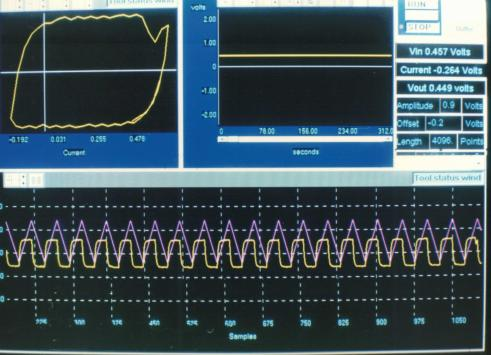
MacLab and Electrolab were expensive units and were sought after. Competition for these resources was fierce, at times. The emergence of cheap data acquisition boards prompted the acquisiton of an Intelligent Instrumentation board—a PCI20428W1 PCI board. This status screen is output from a test program that was set up using the Intelligent Instrumentation Designer software to run a cyclic voltammogram—in this case, simple chart-recorder functionality. This solution was used as a stop-gap until a linux driver was written.
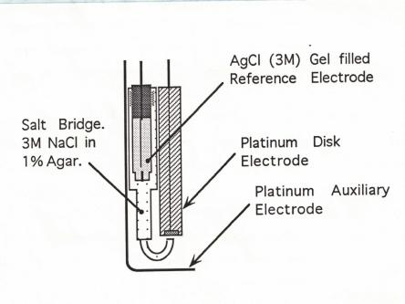
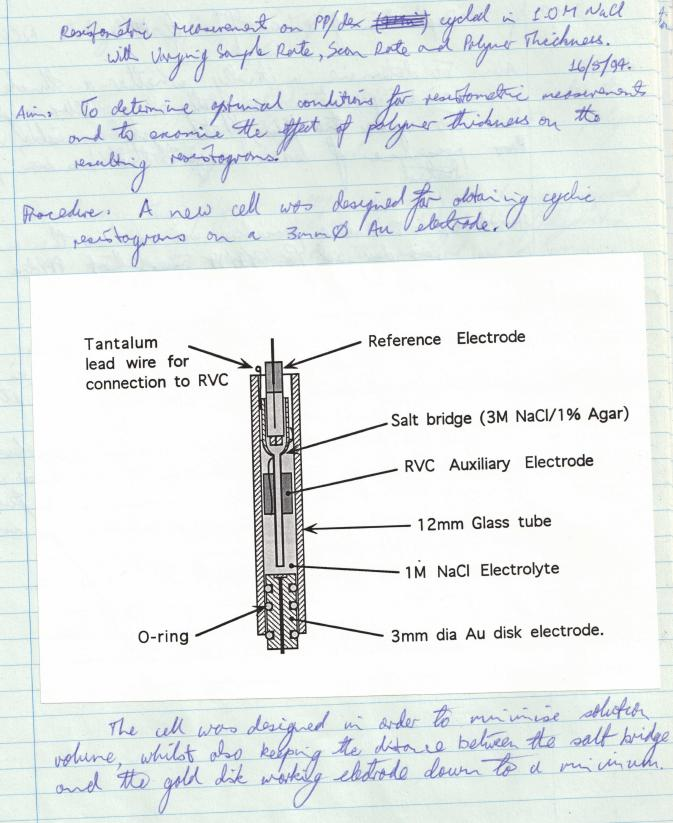
Cyclic Resistometry required low IR drop across the Reference Electrode and Working electrode. Initially, after consultation with a colleague, a Luggin Probe was constructed by our Departmental Workshop, based on my Specifications. Refinement was iterative. By redesigning the cell further, and having the reference electrode horizontally opposed and in close-proximity to a gold working electrode, the IR drop was miimised and, in conjunction with employing Faraday shielding, teh signal to noise was significantly improved.
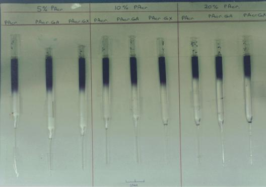
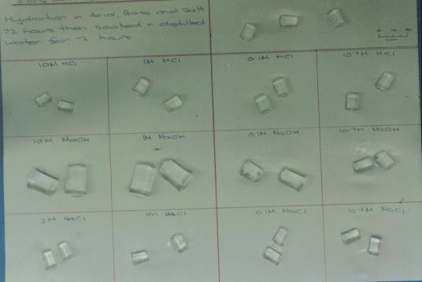
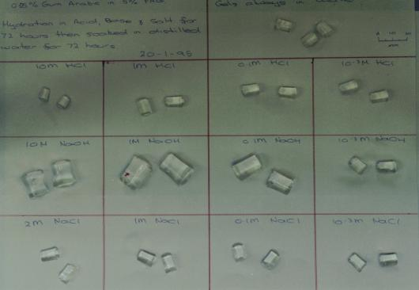
Systematic investigations of the effects of pH and salinity on Polyacrylamide and gum-modified co-polymers,
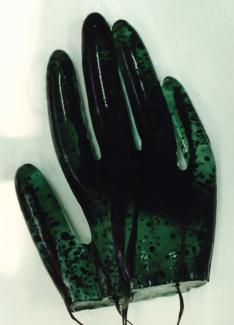
Exploratory fabrication of 3D conductive hydrogel structures via in situ polymerisation of polyaniline within a polyacrylamide matrix, using carbon-fibre electrodes and custom moulding approaches. This object was produced for a local conference as a tongue-in-cheek hat-tip to the idea of being able to engineer these materials to engineer mechanically stable artifacts
This body of work reflects a consistent approach to experimental system development: identifying sources of measurement error, refining electrode geometry and materials, and implementing controlled environments to improve reliability and interpretability of electrochemical data.